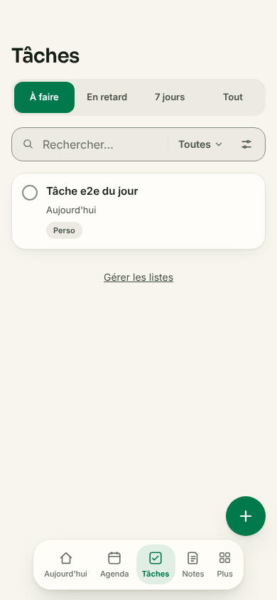
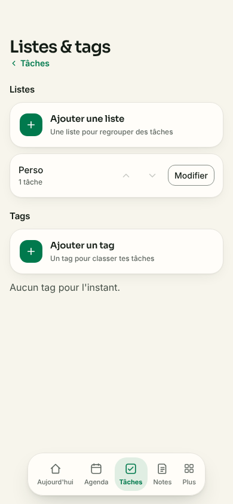
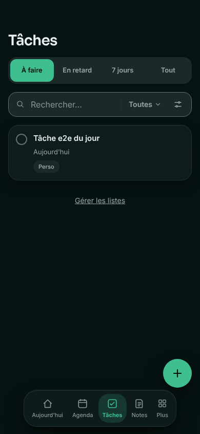
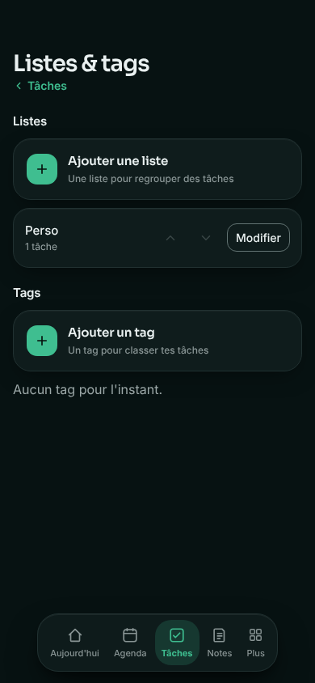

Parcours « 01-creer-modifier-supprimer » étape 1 (goto) : HTTP 404 : GET http://localhost:3110/_vercel/speed-insights/script.js ; console.error : Failed to load resource: the server responded with a status of 404 (Not Found) ; console.error : Refused to execute script from 'http://localhost:3110/_vercel/speed-insights/script.js' because its MIME type ('text/plain') is not executable, and strict MIME type checking is enabled. ; requête échouée : GET http://localhost:3110/_vercel/speed-insights/script.js (net::ERR_ABORTED)
Parcours « 01-creer-modifier-supprimer » étape 7 (reload) : HTTP 404 : GET http://localhost:3110/_vercel/speed-insights/script.js ; console.error : Failed to load resource: the server responded with a status of 404 (Not Found) ; console.error : Refused to execute script from 'http://localhost:3110/_vercel/speed-insights/script.js' because its MIME type ('text/html') is not executable, and strict MIME type checking is enabled. ; requête échouée : GET http://localhost:3110/_vercel/speed-insights/script.js (net::ERR_ABORTED)
Parcours « 01-creer-modifier-supprimer » étape 16 (reload) : HTTP 404 : GET http://localhost:3110/_vercel/speed-insights/script.js ; console.error : Failed to load resource: the server responded with a status of 404 (Not Found) ; console.error : Refused to execute script from 'http://localhost:3110/_vercel/speed-insights/script.js' because its MIME type ('text/html') is not executable, and strict MIME type checking is enabled. ; requête échouée : GET http://localhost:3110/_vercel/speed-insights/script.js (net::ERR_ABORTED)
Parcours « 02-cocher-annuler » étape 1 (goto) : HTTP 404 : GET http://localhost:3110/_vercel/speed-insights/script.js ; console.error : Failed to load resource: the server responded with a status of 404 (Not Found) ; console.error : Refused to execute script from 'http://localhost:3110/_vercel/speed-insights/script.js' because its MIME type ('text/plain') is not executable, and strict MIME type checking is enabled. ; requête échouée : GET http://localhost:3110/_vercel/speed-insights/script.js (net::ERR_ABORTED)
Parcours « 02-cocher-annuler » étape 9 (reload) : HTTP 404 : GET http://localhost:3110/_vercel/speed-insights/script.js ; console.error : Failed to load resource: the server responded with a status of 404 (Not Found) ; console.error : Refused to execute script from 'http://localhost:3110/_vercel/speed-insights/script.js' because its MIME type ('text/html') is not executable, and strict MIME type checking is enabled. ; requête échouée : GET http://localhost:3110/_vercel/speed-insights/script.js (net::ERR_ABORTED)
Parcours « 03-cas-limites-saisie » étape 1 (goto) : HTTP 404 : GET http://localhost:3110/_vercel/speed-insights/script.js ; console.error : Failed to load resource: the server responded with a status of 404 (Not Found) ; console.error : Refused to execute script from 'http://localhost:3110/_vercel/speed-insights/script.js' because its MIME type ('text/plain') is not executable, and strict MIME type checking is enabled. ; requête échouée : GET http://localhost:3110/_vercel/speed-insights/script.js (net::ERR_ABORTED)
Parcours « 04-sous-taches » étape 1 (goto) : HTTP 404 : GET http://localhost:3110/_vercel/speed-insights/script.js ; console.error : Failed to load resource: the server responded with a status of 404 (Not Found) ; console.error : Refused to execute script from 'http://localhost:3110/_vercel/speed-insights/script.js' because its MIME type ('text/plain') is not executable, and strict MIME type checking is enabled. ; requête échouée : GET http://localhost:3110/_vercel/speed-insights/script.js (net::ERR_ABORTED)
Parcours « 04-sous-taches » étape 13 (reload) : HTTP 404 : GET http://localhost:3110/_vercel/speed-insights/script.js ; console.error : Failed to load resource: the server responded with a status of 404 (Not Found) ; console.error : Refused to execute script from 'http://localhost:3110/_vercel/speed-insights/script.js' because its MIME type ('text/html') is not executable, and strict MIME type checking is enabled. ; requête échouée : GET http://localhost:3110/_vercel/speed-insights/script.js (net::ERR_ABORTED)
Parcours « 05-recherche-filtres-vues » étape 1 (goto) : HTTP 404 : GET http://localhost:3110/_vercel/speed-insights/script.js ; console.error : Failed to load resource: the server responded with a status of 404 (Not Found) ; console.error : Refused to execute script from 'http://localhost:3110/_vercel/speed-insights/script.js' because its MIME type ('text/plain') is not executable, and strict MIME type checking is enabled. ; requête échouée : GET http://localhost:3110/_vercel/speed-insights/script.js (net::ERR_ABORTED)
Parcours « 06-listes-tags » étape 1 (goto) : HTTP 404 : GET http://localhost:3110/_vercel/speed-insights/script.js ; console.error : Failed to load resource: the server responded with a status of 404 (Not Found) ; console.error : Refused to execute script from 'http://localhost:3110/_vercel/speed-insights/script.js' because its MIME type ('text/plain') is not executable, and strict MIME type checking is enabled. ; requête échouée : GET http://localhost:3110/_vercel/speed-insights/script.js (net::ERR_ABORTED)
Parcours « 06-listes-tags » étape 8 (reload) : HTTP 404 : GET http://localhost:3110/_vercel/speed-insights/script.js ; console.error : Failed to load resource: the server responded with a status of 404 (Not Found) ; console.error : Refused to execute script from 'http://localhost:3110/_vercel/speed-insights/script.js' because its MIME type ('text/html') is not executable, and strict MIME type checking is enabled. ; requête échouée : GET http://localhost:3110/_vercel/speed-insights/script.js (net::ERR_ABORTED)
Parcours « 07-retour-arriere » étape 1 (goto) : HTTP 404 : GET http://localhost:3110/_vercel/speed-insights/script.js ; console.error : Failed to load resource: the server responded with a status of 404 (Not Found) ; console.error : Refused to execute script from 'http://localhost:3110/_vercel/speed-insights/script.js' because its MIME type ('text/plain') is not executable, and strict MIME type checking is enabled. ; requête échouée : GET http://localhost:3110/_vercel/speed-insights/script.js (net::ERR_ABORTED)
Écrans au repos (2)

/taches · clair · HTTP 200

/taches/listes · clair · HTTP 200

/taches · sombre · HTTP 200

/taches/listes · sombre · HTTP 200
Usage réel (7 parcours)
01-creer-modifier-supprimer
1. goto ouvrir Tâches (vue À faire) — anomalie ⚠ HTTP 404 : GET http://localhost:3110/_vercel/speed-insights/script.js ⚠ console.error : Failed to load resource: the server responded with a status of 404 (Not Found) ⚠ console.error : Refused to execute script from 'http://localhost:3110/_vercel/speed-insights/script.js' because its MIME type ('text/plain') is not executable, and strict MIME type checking is enabled. ⚠ requête échouée : GET http://localhost:3110/_vercel/speed-insights/script.js (net::ERR_ABORTED)2. click « + » flottant — ok3. fill saisir le titre — ok4. click créer — ok5. expect_text attendre la fin de l’enregistrement (toast) — ok6. expect_text carte visible dans À faire — ok7. reload persistance — anomalie ⚠ HTTP 404 : GET http://localhost:3110/_vercel/speed-insights/script.js ⚠ console.error : Failed to load resource: the server responded with a status of 404 (Not Found) ⚠ console.error : Refused to execute script from 'http://localhost:3110/_vercel/speed-insights/script.js' because its MIME type ('text/html') is not executable, and strict MIME type checking is enabled. ⚠ requête échouée : GET http://localhost:3110/_vercel/speed-insights/script.js (net::ERR_ABORTED)8. expect_text http://localhost:3110/taches — ok9. click ouvrir la tâche (modifier) — ok10. fill role=textbox[name="Titre" s] — ok11. click enregistrer — ok12. expect_text http://localhost:3110/taches — ok13. click rouvrir — ok14. click supprimer (toast Annuler) — ok15. wait laisser expirer le délai d'annulation — ok16. reload http://localhost:3110/taches — anomalie ⚠ HTTP 404 : GET http://localhost:3110/_vercel/speed-insights/script.js ⚠ console.error : Failed to load resource: the server responded with a status of 404 (Not Found) ⚠ console.error : Refused to execute script from 'http://localhost:3110/_vercel/speed-insights/script.js' because its MIME type ('text/html') is not executable, and strict MIME type checking is enabled. ⚠ requête échouée : GET http://localhost:3110/_vercel/speed-insights/script.js (net::ERR_ABORTED)17. expect_absent suppression persistée — ok
02-cocher-annuler
1. goto http://localhost:3110/taches — anomalie ⚠ HTTP 404 : GET http://localhost:3110/_vercel/speed-insights/script.js ⚠ console.error : Failed to load resource: the server responded with a status of 404 (Not Found) ⚠ console.error : Refused to execute script from 'http://localhost:3110/_vercel/speed-insights/script.js' because its MIME type ('text/plain') is not executable, and strict MIME type checking is enabled. ⚠ requête échouée : GET http://localhost:3110/_vercel/speed-insights/script.js (net::ERR_ABORTED)2. click cocher la tâche du jour — ok3. wait toast « faite » + Annuler — ok4. screenshot état après coche — ok5. click annuler via le toast — ok6. expect_text http://localhost:3110/taches — ok7. click recocher — ok8. wait http://localhost:3110/taches — ok9. reload persistance de l'état fait — anomalie ⚠ HTTP 404 : GET http://localhost:3110/_vercel/speed-insights/script.js ⚠ console.error : Failed to load resource: the server responded with a status of 404 (Not Found) ⚠ console.error : Refused to execute script from 'http://localhost:3110/_vercel/speed-insights/script.js' because its MIME type ('text/html') is not executable, and strict MIME type checking is enabled. ⚠ requête échouée : GET http://localhost:3110/_vercel/speed-insights/script.js (net::ERR_ABORTED)10. click vue Tout : où est la tâche faite ? — ok11. screenshot http://localhost:3110/taches — ok
03-cas-limites-saisie
1. goto http://localhost:3110/taches — anomalie ⚠ HTTP 404 : GET http://localhost:3110/_vercel/speed-insights/script.js ⚠ console.error : Failed to load resource: the server responded with a status of 404 (Not Found) ⚠ console.error : Refused to execute script from 'http://localhost:3110/_vercel/speed-insights/script.js' because its MIME type ('text/plain') is not executable, and strict MIME type checking is enabled. ⚠ requête échouée : GET http://localhost:3110/_vercel/speed-insights/script.js (net::ERR_ABORTED)2. click role=button[name="Ajouter une tâche" s] — ok3. click titre vide — ok4. expect_text http://localhost:3110/taches — ok5. fill espaces seuls — ok6. click role=button[name="Ajouter" s] — ok7. expect_text http://localhost:3110/taches — ok8. fill titre très long avec mot insécable — ok9. dblclick double clic sur Ajouter — ok10. wait http://localhost:3110/taches — ok11. click role=button[name=/^Tout/] — ok12. screenshot combien de copies ? — ok13. back retour arrière depuis la liste — ok
04-sous-taches
1. goto http://localhost:3110/taches — anomalie ⚠ HTTP 404 : GET http://localhost:3110/_vercel/speed-insights/script.js ⚠ console.error : Failed to load resource: the server responded with a status of 404 (Not Found) ⚠ console.error : Refused to execute script from 'http://localhost:3110/_vercel/speed-insights/script.js' because its MIME type ('text/plain') is not executable, and strict MIME type checking is enabled. ⚠ requête échouée : GET http://localhost:3110/_vercel/speed-insights/script.js (net::ERR_ABORTED)2. click ouvrir la tâche — ok3. fill role=textbox[name="Nouvelle sous-tâche" s] — ok4. press ajouter la sous-tâche — ok5. expect_text http://localhost:3110/taches — ok6. fill role=textbox[name="Nouvelle sous-tâche" s] — ok7. press role=textbox[name="Nouvelle sous-tâche" s] — ok8. click refermer la tâche — ok9. expect_text compteur sur la carte — ok10. click déplier — ok11. click cocher Lait — ok12. expect_text http://localhost:3110/taches — ok13. reload http://localhost:3110/taches — anomalie ⚠ HTTP 404 : GET http://localhost:3110/_vercel/speed-insights/script.js ⚠ console.error : Failed to load resource: the server responded with a status of 404 (Not Found) ⚠ console.error : Refused to execute script from 'http://localhost:3110/_vercel/speed-insights/script.js' because its MIME type ('text/html') is not executable, and strict MIME type checking is enabled. ⚠ requête échouée : GET http://localhost:3110/_vercel/speed-insights/script.js (net::ERR_ABORTED)14. expect_text persistance — ok
05-recherche-filtres-vues
1. goto http://localhost:3110/taches — anomalie ⚠ HTTP 404 : GET http://localhost:3110/_vercel/speed-insights/script.js ⚠ console.error : Failed to load resource: the server responded with a status of 404 (Not Found) ⚠ console.error : Refused to execute script from 'http://localhost:3110/_vercel/speed-insights/script.js' because its MIME type ('text/plain') is not executable, and strict MIME type checking is enabled. ⚠ requête échouée : GET http://localhost:3110/_vercel/speed-insights/script.js (net::ERR_ABORTED)2. fill role=textbox[name="Rechercher une tâche" s] — ok3. expect_text http://localhost:3110/taches — ok4. fill role=textbox[name="Rechercher une tâche" s] — ok5. screenshot état vide de recherche — ok6. click role=button[name="Effacer la recherche" s] — ok7. click ouvrir filtres — ok8. click filtrer priorité haute — ok9. press fermer la feuille — ok10. screenshot filtre actif sans résultat — ok11. click role=button[name="Réinitialiser les filtres" s] — ok12. click role=button[name=/^En retard/] — ok13. click role=button[name=/^7 jours/] — ok14. click sélecteur de liste — ok15. screenshot http://localhost:3110/taches — ok
06-listes-tags
1. goto http://localhost:3110/taches — anomalie ⚠ HTTP 404 : GET http://localhost:3110/_vercel/speed-insights/script.js ⚠ console.error : Failed to load resource: the server responded with a status of 404 (Not Found) ⚠ console.error : Refused to execute script from 'http://localhost:3110/_vercel/speed-insights/script.js' because its MIME type ('text/plain') is not executable, and strict MIME type checking is enabled. ⚠ requête échouée : GET http://localhost:3110/_vercel/speed-insights/script.js (net::ERR_ABORTED)2. click role=link[name="Gérer les listes" s] — ok3. expect_text http://localhost:3110/taches/listes — ok4. click role=button[name=/Ajouter une liste/] — ok5. fill role=textbox[name="Nom" s] — ok6. click role=button[name="Ajouter" s] — ok7. expect_text http://localhost:3110/taches/listes — ok8. reload http://localhost:3110/taches/listes — anomalie ⚠ HTTP 404 : GET http://localhost:3110/_vercel/speed-insights/script.js ⚠ console.error : Failed to load resource: the server responded with a status of 404 (Not Found) ⚠ console.error : Refused to execute script from 'http://localhost:3110/_vercel/speed-insights/script.js' because its MIME type ('text/html') is not executable, and strict MIME type checking is enabled. ⚠ requête échouée : GET http://localhost:3110/_vercel/speed-insights/script.js (net::ERR_ABORTED)9. expect_text persistance de la liste — ok10. click role=button[name=/Ajouter un tag/] — ok11. fill role=textbox[name="Nom" s] — ok12. click role=button[name="Ajouter" s] — ok13. expect_text http://localhost:3110/taches/listes — ok14. click retour à Tâches par le lien — ok15. click role=button[name="Ajouter une tâche" s] — ok16. click nouvelle liste proposée et sélectionnable dans la feuille — ok
07-retour-arriere
1. goto http://localhost:3110/taches — anomalie ⚠ HTTP 404 : GET http://localhost:3110/_vercel/speed-insights/script.js ⚠ console.error : Failed to load resource: the server responded with a status of 404 (Not Found) ⚠ console.error : Refused to execute script from 'http://localhost:3110/_vercel/speed-insights/script.js' because its MIME type ('text/plain') is not executable, and strict MIME type checking is enabled. ⚠ requête échouée : GET http://localhost:3110/_vercel/speed-insights/script.js (net::ERR_ABORTED)2. click ouvrir la feuille — ok3. back retour Android : la feuille doit se fermer, on reste sur Tâches — ok4. expect_text http://localhost:3110/taches — ok5. click ouvrir la tâche en édition — ok6. back retour arrière : l’édition doit se refermer sans quitter Tâches — ok7. expect_text http://localhost:3110/taches — ok8. click role=link[name="Gérer les listes" s] — ok9. back retour depuis Listes & tags — ok10. expect_text http://localhost:3110/taches — ok